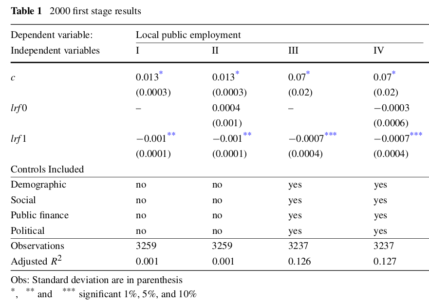

Econometria III
Questões - Causalidade e Variáveis Instrumentais
Causalidade
Questão 1 (2,0 pontos)
Assinale Verdadeiro ou Falso, com relação a Causalidade. Justifique as falsas:
- (\(\phantom{X}\)) A estrutura de resultados potenciais é uma estrutura estatística usada para estudar o efeito causal de uma intervenção.
Resposta: Verdadeiro
- (\(\phantom{X}\)) O problema fundamental da inferência causal é que só podemos observar um resultado potencial para cada unidade.
Resposta: Verdadeiro
- (\(\phantom{X}\)) O resultado contrafactual refere-se ao que teria acontecido a um indivíduo na ausência de uma intervenção.
Resposta: Falso
- (\(\phantom{X}\)) Um experimento aleatorizado (RCT) é um tipo de estudo observacional que pode ajudar a estabelecer a causalidade.
Resposta: Falso
- (\(\phantom{X}\)) O efeito do tratamento para uma unidade de observação é a diferença entre os resultados potenciais nas condições de tratamento e controle.
Resposta: Verdadeiro
- (\(\phantom{X}\)) Uma variável de confusão é uma variável que está relacionada tanto à atribuição do tratamento quanto aos resultados potenciais.
Resposta: Verdadeiro
- (\(\phantom{X}\)) DAGs são uma ferramenta gráfica usada para representar as relações causais entre variáveis em um sistema.
Resposta: Verdadeiro
- (\(\phantom{X}\)) Em um DAG, as setas entre as variáveis representam relacionamentos causais, onde o início da seta indica a causa e a ponta da seta indica o efeito.
Resposta: Verdadeiro
- (\(\phantom{X}\)) Um caminho backdoor em um DAG é um caminho que conecta a exposição (tratamento) ao resultado por meio de variáveis que não fazem parte do caminho causal.
Resposta: Verdadeiro
- (\(\phantom{X}\)) Um colisor em um DAG é uma variável causada por duas ou mais outras variáveis em um caminho entre tratamento e resultado, e pode induzir associações espúrias entre essas variáveis.
Resposta: Verdadeiro
- (\(\phantom{X}\)) Em um DAG, as setas entre as variáveis representam correlação em vez de causalidade.
Resposta: Falso
- (\(\phantom{X}\)) DAGs podem ser usados para provar causalidade entre variáveis.
Resposta: Falso
Questão 2 (2,0 pontos)
Considere o seguinte DAG e responda aos itens abaixo:
Considerando que deseja-se estimar o efeito causal de X em Y, então descreva quem são as variáveis de confusão, os mecanismos e os colisores.
Se desejamos o efeito total de X em Y, então devemos controlar para W somente. Explique porque.
Explique por que a variável Z não pode ser utilizada como instrumento de X para recuperar o efeito causal de X em Y.
Variáveis Instrumentais
Questão 1 (2,0 pontos)
Assinale Verdadeiro ou Falso, com relação a Variáveis Instrumentais. Justifique as falsas:
(\(\phantom{X}\)) Considere o modelo \(y = \alpha + \beta x + u\), onde \(x\) é uma covariável endógena. Se \(z\) é um instrumento válido para \(x\), deve ser que \(z\) influencie \(x\) e que também influencie \(y\), independentemente de \(x\).
(\(\phantom{X}\)) Para calcular os erros padrão corretos para os coeficientes estimados através do MQ2E é altamente recomendado o uso das rotinas de estimativa do MQ2E disponíveis em pacotes estatísticos ao invés de produzir essas estimativas manualmente.
(\(\phantom{X}\)) Quando todas as suposições de identificação são válidas, podemos confiar que o estimador de variáveis instrumentais (VI) será consistente.
(\(\phantom{X}\)) Considere o modelo \(y = \alpha + \beta x + u\), onde \(x\) é uma covariável endógena e \(z\) é um candidato a instrumento para \(x\). Se houver correlação entre \(z\) e \(u\), mas for menor que a correlação entre \(x\) e \(u\), será sempre melhor usar a estimativa VI do que a estimativa OLS, porque VI deve ter menor viés.
(\(\phantom{X}\)) Instrumentos fracos podem inflar os erros padrão produzidos por VI, mas não induzem viés de amostra finita.
(\(\phantom{X}\)) A regra de bolso para verificar se há instrumentos fracos é a seguinte: para o caso de um único regressor endógeno, a estatística F de primeiro estágio deve ser significativa para indicar um instrumento forte.
(\(\phantom{X}\)) A distinção entre variáveis endógenas e exógenas depende da distribuição das variáveis: quando são normalmente distribuídas, são exógenas, caso contrário são endógenas.
(\(\phantom{X}\)) O estimador MQ2E é consistente e tem uma distribuição normal em grandes amostras.
(\(\phantom{X}\)) Instrumentos fracos são um problema porque fazem com que os instrumentos não sejam exógenos.
Solução
( F ) \(z\) não pode influenciar \(y\) diretamente pois fere a restrição de exclusão.
( V )
( V )
( F ) Nem sempre. A condição para MQO ser melhor (menos pior) que VI seria \(\operatorname{corr}\left(x_{i}, u_{i}\right) < \frac{\operatorname{corr}\left(z_{i}, u_{i}\right)}{\operatorname{corr}\left(z_{i}, x_{i}\right)}\). E mesmo assim pode-se argumentar que uma troca de sinal é a pior coisa que pode existir em um estimador. Neste sentido, mesmo que a magnitude do viés de VI seja maior, ainda poderíamos preferi-lo se pelo menos esteja com o sinal correto.
( F ) Instrumentos fracos podem induzir viés em amostra finita pois, na amostra, não necessariamente \(\sum_{i=1}^{N}\left(z_{i}-\bar{z}\right) u_{i}=0\)
( F ) Não basta ser significativa.
( F ) A distinção entre variáveis endógenas e exógenas se faz pela covariância com o termo de erro. Exógena: \(E[u|x]=0\).
( V )
( F ) Instrumento não faz regressor ser exógeno ou não. O problema de instrumentos fracos é que pode existir viés mesmo em grandes amostras.
Questão 2 (4,0 pontos)
No artigo de Mattos and França (2011), os autores examinam a relação entre emprego público e redistribuição de renda nos municípios brasileiros. Eles utilizam os requisitos estabelecidos pela Lei de Responsabilidade Fiscal como instrumento para a variação do emprego público entre os municípios.
A LRF estabelece limites máximos para dois grandes itens do orçamento público, um deles sendo as despesas com folha de pagamento, que não devem ultrapassar 60% da receita corrente líquida (RCL) do município. A LRF é uma variável dummy que equivale a um para governos cujo gasto com folha de pagamento ultrapassou 60% da RCL em pelo menos um ano entre 1997 e 1999 e estava dentro dos limites impostos pela LRF em 2000. Essa variável é igual a zero para todos os demais municípios.
Este artigo propõe investigar o efeito do emprego público na distribuição de renda nos municípios brasileiros. A variável dependente é a desigualdade de renda (incineq), enquanto que as variáveis independentes são emprego público (publicemp) e outros controles. A dummy lrf1 servirá de instrumento para o emprego público.
\[\text{incineq}_i=\eta + \delta \text{publicemp}_i + \lambda\text{controls}_i + \varepsilon_i\]
Por que o emprego público pode estar correlacionado com o termo de erro \(\varepsilon\)? Qual o problema resultante? (1,0 ponto)
Você acha que a LRF é um bom instrumento para o nível de emprego público local? Cite os dois critérios que uma variável instrumental deve atender e defenda ou critique a LRF com base nestes critérios. (1,5 pontos)
Os resultados do primeiro estágio são apresentados abaixo:

- Com base nestes resultados, você imagina que LRF é um bom instrumento para publicemp? O que você faria de diferente nesta estimação de primeiro estágio? (1,5 pontos)
Questão 3 (4,0 pontos)
Considere um modelo para a saúde de um indivíduo:
\[saude=\beta_0+\beta_1 idade+\beta_2 peso+\beta_3 altura+\beta_4 masculino+\beta_5 trabalho+\beta_6 exercicio+u_1\]
onde saude é alguma medida quantitativa da saúde da pessoa; idade, peso, altura e masculino são autoexplicativos; trabalho é horas semanais trabalhadas; e exercicio são as horas de exercício por semana.
Por que você poderia se preocupar com o fato de o exercício estar correlacionado com o termo de erro \(u_1\)? Que problema esta correlação provocaria no seu estimador de MQO?
Suponha que você possa coletar dados sobre duas variáveis adicionais,
distcasaedistrab, as distâncias de casa e do trabalho até a academia mais próxima. Discuta se estas variáveis seriam bons instrumentos paraexercicio. Quais as condições que elas devem atender? Explique em detalhes.Agora suponha que
distcasaedistrabnão estejam de fato correlacionados com \(u_1\), assim como todas as variáveis na equação acima, com exceção deexercicio. Escreva a forma reduzida paraexercicio.Como as hipóteses de identificação na parte b) pode ser testada?
Solução
- A correlação entre exercício e o termo de erro \(u_1\) pode ocorrer se houver algum fator não observável que afete tanto a quantidade de exercício que uma pessoa faz quanto sua saúde. Por exemplo, se pessoas que têm uma tendência genética para serem mais saudáveis também tendem a ser mais ativas fisicamente.
Se exercício e \(u_1\) estiverem correlacionados, o estimador de Mínimos Quadrados Ordinários (MQO) pode ser viesado e inconsistente. Isso ocorre porque o MQO assume que não há correlação entre as variáveis independentes e o termo de erro. Se houver correlação, o MQO não será capaz de separar os efeitos de exercício na saude daqueles que vêm do termo de erro \(u_1\), o que levará a estimativas incorretas dos coeficientes.
Uma maneira de lidar com esse problema é usar uma variável instrumental que seja correlacionada com exercício, mas não com \(u_1\). A variável instrumental ajudará a isolar o efeito causal de exercício na saude, permitindo que o MQO forneça estimativas consistentes e não viesadas dos coeficientes.
- As variáveis
distcasaedistrabpodem ser boas candidatas para servir como variáveis instrumentais paraexercicio. Isso ocorre porque elas são correlacionadas com este, mas não devem estar correlacionadas com o termo de erro \(u_1\).
Para que as variáveis instrumentais sejam válidas, elas devem atender a algumas condições:
Relevância: As variáveis instrumentais devem estar correlacionadas com a variável endógena (exercicio), ou seja, elas devem afetar a variável endógena de alguma forma.
Exclusão: As variáveis instrumentais não devem afetar diretamente (ou por meio de algum outro mecanismo que não a variável endógena) a variável dependente. Isso significa que elas não devem aparecer na equação de regressão.
Exogeneidade: As variáveis instrumentais devem ser independentes do termo de erro \(u_1\). Isso significa que elas não devem ser afetadas por fatores não observáveis que também afetem saude.
No caso das variáveis distcasa e distrab, a primeira condição parece ser satisfeita, pois a distância até a academia mais próxima pode afetar a quantidade de exercício que uma pessoa faz. A segunda condição também parece plausível, já que a distância até a academia não deve estar diretamente relacionada à saúde de uma pessoa, por exemplo. A terceira condição não é possível de avaliar empiricamente, pois envolve fatores não observáveis que afetam tanto a distância até a academia quanto a saude. A validade desta terceira hipótese deve ser feita através de teoria economica e arguição lógica.
A primeira condição para a validade das variáveis instrumentais pode ser testada empiricamente através do teste F em primeiro estágio.
O teste F em primeiro estágio avalia se as variáveis instrumentais realmente afetam a variável endógena de forma significativa. Uma regressão é estimada da variável endógena (exercicio) sobre as variáveis instrumentais (distcasa ou distrab), juntamente com outras variáveis exógenas incluídas na equação de regressão. Em seguida, um teste F de contribuição marginal dos instrumentos é realizado para avaliar se estes têm um efeito significativo na variável endógena.
Se o resultado do teste F for significativo, indica que as variáveis instrumentais são relevantes. No entanto, é importante ressaltar que o teste F em primeiro estágio por si só não é suficiente para garantir a validade das variáveis instrumentais. É necessário avaliar também as outras condições discutidas anteriormente.
- Se distcasa e distrab não estiverem correlacionados com o termo de erro \(u_1\), podemos utilizá-las como variáveis instrumentais para exercicio na estimação via MQ2E.
O primeiro estágio consiste em estimar a relação entre as variáveis instrumentais (distcasa e distrab) e a variável endógena (exercicio) juntamente com outras variáveis exógenas que afetam exercicio. A equação do primeiro estágio é:
\[exer_i=\delta_0+\delta_1 distcasa_i+\delta_2distrab_i+\delta_3idade_i+\delta_4peso_i+\delta_5altura_i+\delta_6masculino_i+\delta_7trabalho_i+v_i\]
Onde \(v_i\) é o termo de erro, e \(\delta_j\) são os coeficientes a serem estimados.
Em seguida, no segundo estágio, substituímos exercicio na equação original pela previsão obtida no primeiro estágio e estimamos a relação entre as outras variáveis exógenas e a variável dependente saude. A equação do segundo estágio é:
\[saude_i=\beta_0+\beta_1idade_i+\beta_2peso_i+\beta_3altura_i+\beta_4masculino_i+\beta_5trabalho_i+\beta_6\hat{exer}_i+\varepsilon_i\]
Onde \(\hat{exer}_i\) é a previsão de exercicio obtida no primeiro estágio para o indivíduo i, e \(varepsilon_i\) é o termo de erro.
Os coeficientes estimados no segundo estágio fornecem as estimativas consistentes dos parâmetros do modelo original. A estimação via MQ2E é especialmente útil quando a variável endógena é afetada por um erro de medida ou por outras fontes de endogeneidade, como no caso em que exercicio está correlacionado com o termo de erro \(u_1\).
Questão 4
Considere um modelo de estimação através de regressão de variáveis instrumentais
\[y_i=\beta_0+\beta_1 x_i+\beta_2w_i+u_i\] onde temos uma amostra independente das variáveis aleatórias Y, X, W e Z. Suponha que X é um regressor endógeno, equanto W é exógeno. Z é um instrumento válido para X.
Escolha a alternativa correta para cada uma das questões abaixo.
3.1) A regra de bolso para verificar se há instrumentos fracos é a seguinte: para o caso de um único regressor endógeno,
- um primeiro estágio F deve ser estatisticamente significativo para indicar um instrumento forte.
- um primeiro estágio F > 1,96 indica que os instrumentos são fracos.
- a estatística t em cada um dos instrumentos deve exceder pelo menos 1,64.
- um primeiro estágio F < 10 indica que os instrumentos são fracos.
- tudo o que precede
3.2) A distinção entre variáveis endógenas e exógenas é
- que as variáveis exógenas são determinadas dentro do modelo e as variáveis endógenas são determinadas fora do modelo
- dependente do tamanho da amostra: para n > 100, as variáveis endógenas tornam-se exógenas
- depende da distribuição das variáveis: quando são normalmente distribuídas, são exógenas, caso contrário são endógenas
- se as variáveis estão ou não correlacionadas com o termo de erro \(u\)
- tudo o que precede
3.3) Quando observadas todas as suas hipóteses, o estimador MQ2E é:
- consistente e tem uma distribuição normal em grandes amostras.
- imparcial
- eficiente em pequenas amostras
- F-distribuído.
- tudo o que precede
3.4) Instrumentos fracos são um problema porque:
- o estimador MQ2E pode não ser normalmente distribuído, mesmo em grandes amostras.
- fazem com que os instrumentos não sejam exógenos.
- o estimador MQ2E não pode ser calculado.
- você não pode mais prever as variáveis endógenas no primeiro estágio.
- tudo o que precede
3.6) Sejam \(W\) as variáveis exógenas incluídas em uma função de regressão que também tem regressores endógenos \(X\). As variáveis \(W\) podem:
- ser variáveis de controle
- tem a propriedade \(E(u_i|W_i) = 0\)
- fazer um instrumento exógeno para a sua regressão
- não ser incluídas na regressão de primeiro estágio
- tudo o que precede
3.7) A lógica das variáveis de controle em regressões de VI:
- é similar a lógica das variáveis de controle no MQO
- só se aplica no caso de erros homocedásticos no primeiro estágio do MQ2E
- é substancialmente diferente da lógica das variáveis de controle no MQO, uma vez que existem duas etapas na estimativa
- implica que o MQ2E é eficiente
- tudo o que precede
3.8) Para que \(W\) seja uma variável de controle efetiva na estimativa de VI, onde \(Z\) é o instrumento, a seguinte condição deve valer
- \(E(u_i) = 0\)
- \(E(u_i|Z_i, W_i) = E(u_i|W_i)\)
- \(E(u_iu_j) \neq 0\)
- deve haver um intercepto na regressão
- tudo o que precede
3.9) O estimador VI pode ser usado para eliminar potencialmente o viés resultante de
- multicolinearidade
- correlação serial
- erros de medida nas variáveis
- heterocedasticidade
- tudo o que precede
3.10) A regressão de variáveis instrumentais usa instrumentos para:
- estabelecer o Efeito Mozart
- para aumentar o R2 da regressão
- para eliminar a correlação serial
- isolar movimentos em \(X\) que não estão correlacionados com \(u\)
- tudo o que precede
Referências
Mattos, Enlinson, and Vitor França. 2011. “Public Employment and Income Redistribution: Causal Evidence for Brazilian Municipalities.” Public Choice 146 (1/2): 43–73. http://www.jstor.org/stable/41483617.